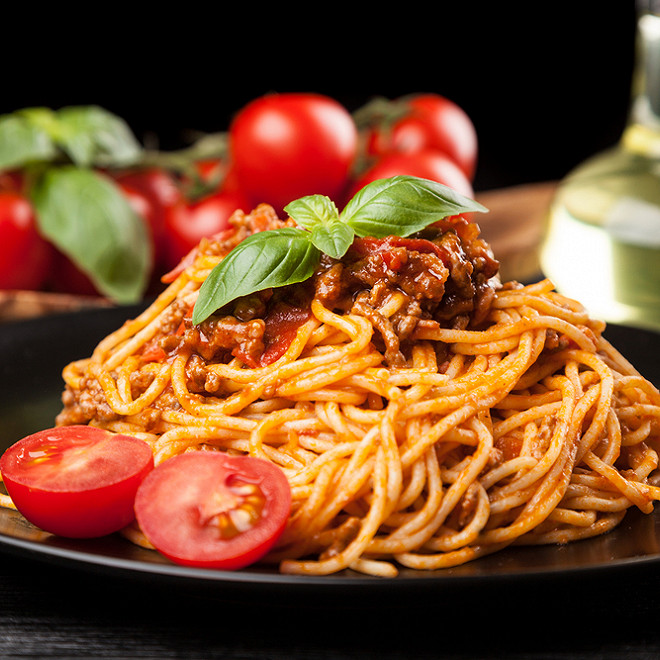

Spaghetti Bolognaise

- 250g de spaghetti
- 1l d'eau
- 2c.à.c de sel
- 200gr de viande haché
- 4 tomates
- 1 oignon
- 1c.à.s d'huile d'olive
- 2-3 feuilles de basiliques
- Dans une poele, éplucher l'oignon et le faire réduire avec l'huile d'olive.
- Ajoutez la viande et cuisez la à feu vif.
- Couper les tomates en quartier et mettez les avec la viande et les oignons.
- Pendant que la sauce mijote. faite bouillir l'eau.
- Lorsque l'eau bout, ajoutez le sel et les spaghetti Mettez un cowercle et baissez le feu.
- Laissez cuire 10 minutes.
- Sewez et mettez les quelques feuilles de basilic sur la sauce.